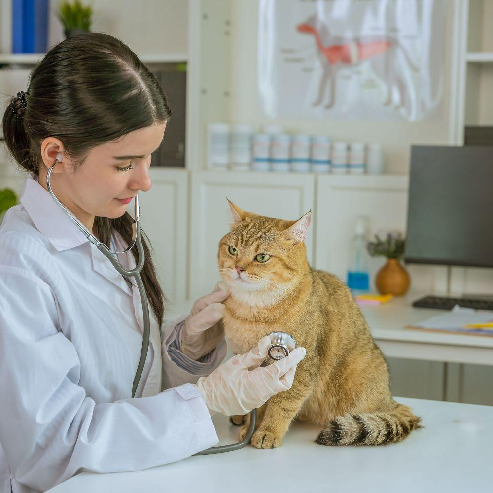

📰 Novedades y Consejos
Mantente informado con nuestras publicaciones y consejos para el cuidado de tu mascota.

🐕 5 Consejos para cuidar a tu perro en verano
El verano trae altas temperaturas que pueden afectar a tu mascota. Descubre cómo mantenerlo fresco y seguro.
Leer más →
🐈 Alimentación saludable para gatos adultos
Una buena alimentación es clave para la salud de tu felino. Te contamos qué debe incluir su dieta diaria.
Leer más →🐕 5 Consejos para cuidar a tu perro en verano
El verano puede ser una época maravillosa para disfrutar con tu perro, pero también conlleva riesgos. Las altas temperaturas pueden provocar golpes de calor, deshidratación y quemaduras en las patas.
Aquí tienes 5 consejos esenciales:
- 💧 Hidratación constante: Asegura que siempre tenga agua fresca y limpia.
- 🌳 Paseos en horas frescas: Evita las horas de mayor calor (11 am - 5 pm).
- 🧊 Protege sus patas: El asfalto quema. Prueba la temperatura con tu mano.
- 🐾 No lo dejes en el auto: En pocos minutos puede sufrir un golpe de calor.
- 🪥 Cepillado frecuente: Ayuda a eliminar el pelo muerto y a refrescarlo.
Recuerda que si notas que tu perro jadea en exceso, está letárgico o tiene las encías rojas, acude de inmediato a tu veterinario de confianza. ¡Cuida a tu mejor amigo!
🐈 Alimentación saludable para gatos adultos
Los gatos son carnívoros estrictos, lo que significa que su dieta debe basarse principalmente en proteínas de origen animal. Una alimentación inadecuada puede provocar obesidad, problemas urinarios y diabetes.
Claves para una dieta balanceada:
- 🥩 Proteína de calidad: Busca alimentos con carne o pescado como primer ingrediente.
- 💧 Agua fresca siempre: Los gatos son propensos a problemas renales, la hidratación es vital.
- 📏 Porciones controladas: Sigue las recomendaciones del fabricante según peso y edad.
- 🍽️ Evita alimentos tóxicos: Cebolla, ajo, chocolate y uvas son peligrosos para ellos.
- 🔄 Variedad controlada: Alterna entre comida seca y húmeda para mantener su interés.
Consulta a tu veterinario para elegir el mejor alimento según la edad, peso y condición de salud de tu gato. Una buena nutrición es la base de una vida larga y saludable.
✉️ ¿Tienes una consulta?
Déjanos tu mensaje y te responderemos a la brevedad.